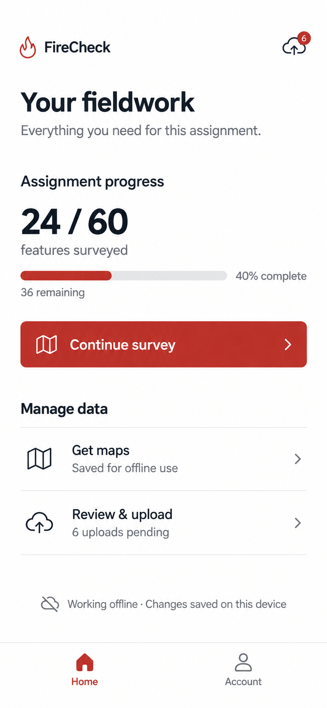
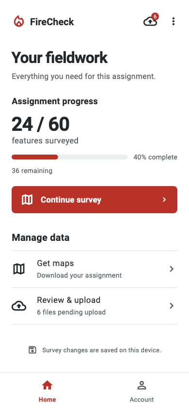

<!doctype html><html lang="en"><meta charset="utf-8"><meta name="viewport" content="width=device-width,initial-scale=1"><title>FireCheck home design review</title><style>body{margin:0;padding:24px;background:#eee;font:16px system-ui;color:#24282b}main{display:flex;gap:24px;justify-content:center}figure{margin:0}figcaption{margin-bottom:16px}img{display:block;width:390px;height:844px;object-fit:contain;background:white}</style><main><figure><figcaption>Selected reference</figcaption></figure><figure><figcaption>Flutter implementation · controlled demo data</figcaption></figure></main></html>